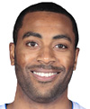
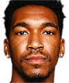
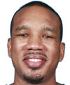
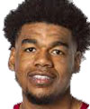

Estatura: 1,93
Peso: 94kg
Edad: 34 años
Años en la NBA: 12 años
Procedente de: North Carolina

Estatura: 1,91
Peso: 91kg
Edad: 24 años
Años en la NBA: 4 años
Procedente de: Kentucky

Estatura: 1,88
Peso: 82kg
Edad: 31 años
Años en la NBA: 11 años
Procedente de: Texas
Estatura: 1,96
Peso: 93kg
Edad: 23 años
Años en la NBA: Novato
Procedente de: Oklahoma

Estatura: 1,96
Peso: 91kg
Edad: 23 años
Años en la NBA: 1 año
Procedente de: Arkansas